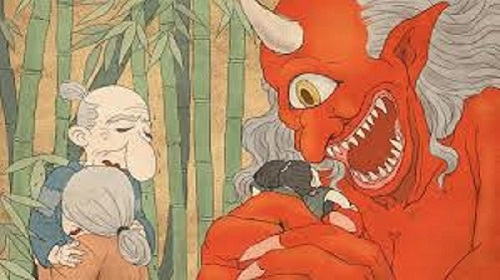
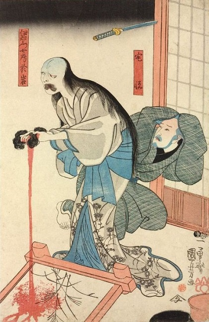
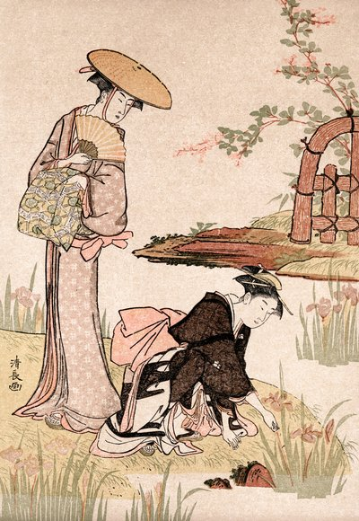

Historias Rurais
kyoto contem varias historias rurais. E nesta pagina irei mostrar algumas das historias rurais mais conhecidas em kyoto
1. A Lenda dos Oni de Oeyama
Oeyama, uma montanha ao norte de Kyoto, é famosa por suas lendas de Oni (demônios ou ogros). De acordo com a lenda, essa montanha era o lar do poderoso oni Shuten Dōji,
que aterrorizava as aldeias locais sequestrando jovens mulheres e saqueando a regiã
Eventualmente, um herói samurai chamado Minamoto no Raikō e seus guerreiros foram enviados para derrotar Shuten Dōji.
Disfarçados como monges, eles se infiltraram no esconderijo dos oni, intoxicaram Shuten Dōji com vinho envenenado e, em seguida, o decapitaram.
Esta história é uma das mais conhecidas lendas de demônios no Japão e reflete o medo que os camponeses tinham das forças da natureza e do desconhecido nas regiões montanhosas.

2. A Lenda do Fantasma da Vila de Ohara
A vila de Ohara, ao norte de Kyoto, é uma tranquila comunidade rural cercada por montanhas e campos de arroz.
Diz-se que, em tempos antigos, um fantasma assombrava a vila após um incidente trágico. A história conta que uma jovem mulher, rejeitada por seu amante,
se afogou em um lago próximo. Seu espírito, cheio de mágoa, começou a aparecer nas margens do lago, especialmente em noites de névoa.
Os moradores realizavam rituais para apaziguar seu espírito, e o lago tornou-se um local de oferendas,
onde as pessoas deixavam pequenos barcos de papel com velas para guiar o espírito em paz. Ainda hoje,
a vila de Ohara é conhecida por sua atmosfera mística e suas tradições budistas antigas.

3. O Espelho Perdido de Kiyotaki
Nas florestas da região de Kiyotaki, há uma antiga lenda sobre um espelho amaldiçoado. De acordo com a história, uma jovem camponesa recebeu um espelho de presente de seu amante,
mas após uma série de infortúnios, o espelho foi perdido nas florestas de Kiyotaki. Acreditava-se que o espelho trazia má sorte para quem o encontrasse,
e a floresta onde foi perdido começou a ser evitada pelos aldeões. Aqueles que ousavam entrar no local relatavam ouvir sussurros ou ver sombras misteriosas entre as árvores,
acreditando que o espírito da jovem ainda vagava em busca de seu espelho.

4. O tunel assombrado de kiyotaki
O Túnel de Kiyotaki foi construído no início do século XX, em 1927, e há rumores de que foi feito usando trabalho forçado de prisioneiros e trabalhadores que sofreram sob condições desumanas durante a construção.
Muitos desses trabalhadores teriam morrido enquanto trabalhavam, e a lenda diz que seus espíritos continuam a assombrar o local, incapazes de encontrar paz.

Click to go back